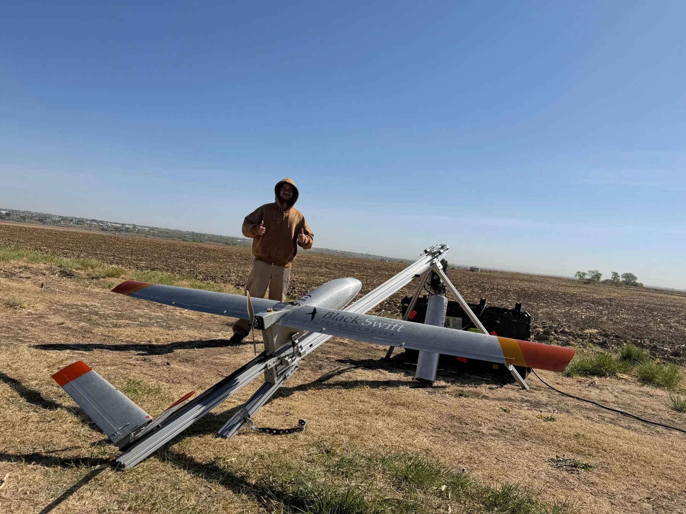

Curiosity, built into practice.


Hello, I’m Ashwin.
Originally from Delhi, India, I’m pursuing a master’s in Aerospace Engineering Sciences at the University of Colorado Boulder, focusing on Astrodynamics and Satellite Navigation Systems. I hold a bachelor’s degree in Aerospace Engineering with a specialization in Avionics from UPES.
My research interests center on scientific instrumentation, energetic-particle measurements and space-plasma physics. The connection between an instrument’s design, the quality of its measurements and the science those measurements enable is what draws me to this work.
My experience spans payload electronics for FLAIR, deployment-mechanism development for GLEE and science implementation for the HUNTER mission concept. These projects have developed my interests in instrument interfaces, testing and the practical demands of turning scientific requirements into working systems.
Teaching is another meaningful part of my graduate experience, through assistantships in introductory astronomy and weather and atmosphere. Outside the lab, I enjoy soccer, badminton, hiking and exploring Colorado. Commitment, perseverance, leading by example and meaningful connections shape how I approach both work and life.